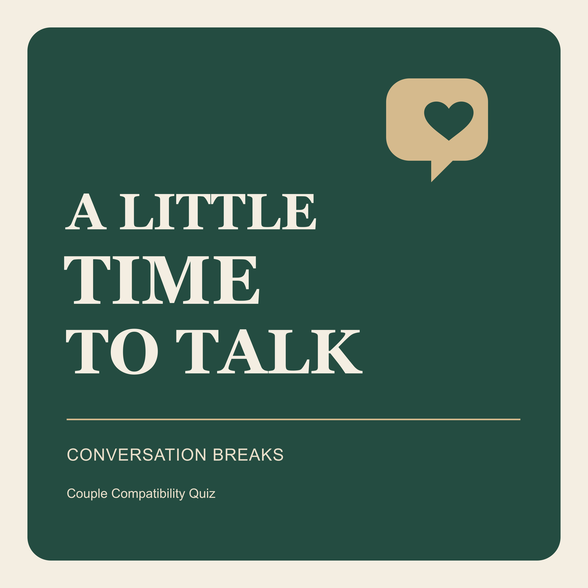

A Little Time to Talk
A short conversation break. Pick a question, take turns, and make a little room to listen.
Five questions for a weekly check-in
19 October 2026 · About four minutes · Free
Five practical questions about feeling understood, sharing everyday responsibilities, time together, small gestures and making next week easier. Pause whenever you want to talk. You may skip any question.
Subscribe with the RSS feed · Download audio · Plain-text transcript
Read the full transcript
The voice in this episode is AI-generated. The conversation prompts are our original material.
Welcome to A Little Time to Talk, a short conversation break from Couple Compatibility Quiz.
This episode is a five-question check-in for two people who want a little room to listen. There is nothing to score, and there is no perfect answer. You can use these questions with a partner, or think them through on your own before inviting someone into the conversation.
If you are listening together, pick a time when neither of you needs to rush. You can pause after each question. Let one person finish before the other responds. And if a question feels wrong for today, skip it. You get to choose what you share.
Let's start with something small. Question one: What is one thing I understood well about you this week?
Try to remember an ordinary moment. Maybe someone noticed that you needed quiet, asked about a difficult day, or remembered a detail that mattered to you. You do not need an impressive story. Name the moment, then say what made it feel good. If nothing comes to mind, you might say what you would like someone to understand next week. Pause here and take turns.
Question two: Which everyday responsibility feels heavier than it looks from the outside?
This could be a task you both see, like cooking dinner. It could also be the work around the task: remembering what is missing, deciding what to make, or noticing when plans have changed. Stay with one example. The listener can ask, what part takes the most energy? You do not have to solve everything while you are still trying to understand it. Pause whenever you need more time.
Question three: How would you like to balance time together and time on your own?
A useful answer can be very specific. I would enjoy a walk together on Saturday. Or, I would like half an hour to myself after work before we catch up. Those examples are invitations to make a plan, not rules about how close a couple ought to be. Each person can want something different. Say what would help this week, then see whether there is a small arrangement you both want to try.
Question four: What small gesture has helped you feel cared for recently?
It might be a cup of tea, a kind message, or having someone put their phone away while you talk. Explain why that gesture mattered to you. If you are the listener, you can check your understanding with a simple sentence: I think what mattered was that you felt remembered. Did I get that right? There is no need to promise a grand change. You are learning which details the other person notices.
And the last question: What is one adjustment that would make next week easier for each of us?
Make the request small enough to picture. Could we decide on dinner before six? Could we choose one evening without extra plans? Could we write down who is doing the morning errand? These are examples, not a checklist you have to finish. Pick one idea that fits your lives, and agree on a time to check how it went. If you cannot agree today, it is fine to leave the question open.
Before you finish, thank each other for one thing you heard. You can come back to a question another day, and your answer is allowed to change.
This has been A Little Time to Talk. The questions are a conversation activity, not counselling or an assessment of your relationship. You can find the written questions and more free conversation prompts at couple compatibility quiz dot com. Thanks for making a little time to listen.
Put conversation cards on your own website
The independent Couple Conversation Cards plugin includes fifteen original questions, a topic picker, random selection and copying. It runs locally without an account, external service or answer storage.
Download the WordPress plugin ZIP. Add [ccq_conversation_cards] to a Shortcode block after installing and activating it. GPLv2 or later. This is a direct download; This plugin has not yet been submitted to the WordPress.org directory.
For more free questions, visit our conversation prompt collection. This resource is maintained by the maker of Couple Compatibility Quiz.
A conversation activity, not counselling or a relationship assessment. No answers are requested on this page. The audio, cover and files are served by GitHub Pages; its normal technical request processing applies.